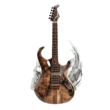
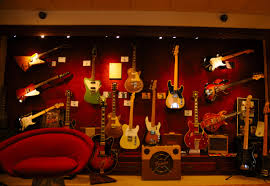

La tienda retro que revive la era dorada del rock
Somos pasión por el sonido analógico, estética ochentera y guitarras que cuentan historias. Bienvenido al rincón donde el rock vuelve a brillar.
.jpg)
Nuestra historia
Nacimos en el Sunset Strip de 1984, entre carteles de neón y amplificadores calientes. Revolución Musical empezó como un pequeño taller-apartado donde guitarristas se reunían a intercambiar piezas, probar sonidos y soñar con riffs que llenaran estadios. Hoy mantenemos esa mística: calibración artesanal, pasión por el tono analógico y una estética que honra la era dorada del rock.

Del taller al escenario
Hacemos más que vender guitarras: recuperamos historias. Cada instrumento pasa por una puesta a punto fina, con técnicas de luthería clásica y ajustes modernos para conservar la personalidad original del instrumento.
Vibras ochenteras
La tienda conserva posters, flyers de conciertos y una selección curada de modelos que definieron los 80s: desde el shred metálico hasta las baladas de estadio.

Por qué elegirnos
Calidad de calibración
Ajustes profesionales de puente, entonación y acción que garantizan sustain y comodidad en cada nota.
Simulación de audio real
Modelos y presets diseñados para replicar las respuestas tonales de amplificadores y pedales clásicos.
Soporte técnico de rockstars
Asesoramiento personalizado y servicio postventa para que tu instrumento rinda como en los grandes escenarios.
¿Listo para rockear?